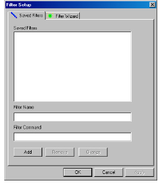

To display metrics with an entity in a column
1 Click the Filter List button at the bottom of a column in your Browser.
The Filter Setup dialog box appears.

2 Select the Filter Wizard tab.
3 From the Attribute list, choose the metric you want to use, for example, Cyclomatic Complexity.
DIScover displays the appropriate operations for the selected metric.
4 From the Operation list, choose the operation you want to apply to the selected metric, for example, > Greater Than.
5 In the Argument field, type the desired value for the operation, for example, 10.
This procedure sets the range of values that DIScover applies to your selected entities.
6 Click Add to results.
DIScover displays your metric filter in terms of a flowchart value and an Access expression in their respective fields. This is helpful when you want to store your metric filter or cut and paste the string into an Access prompt.
7 If you want to store your filter for later use:
a Copy the string from the Results shown as Access expression field.
b Click the Saved Filters tab.
c Paste the string into the Filter String field.
d In the Filter Name field, type a new name for the saved filter.
e Click Add.
8 Click Apply.
9 Click OK.
You can repeat this procedure in any column that has a Filter List button.